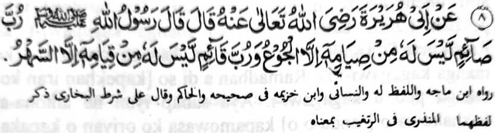

Hadith 8

Miyakathitayan ko Abu Hurairah (Radhiallaho 'Anho) a pitharo iyan a pitharo o Rasulollah (Sallallaho Alaihi Wasallam), ''Madakel a barapowasa a da den a miyambagi-an niyan ko powasa niyan a rowar sa kiya-ori ron, go madakel a tomitindeg [ko Sambayang ko kagagawi-i] a rowar sa kiyatoratoda-on. ”
OSAYAN
Makapantag sangka-iya a Hadith a so manga Olama na telo a miya-aloy ran a tapsir: Paganay ron, na giyangka-iya Hadith na khapakay a maka-antap ko siran a gi-i mamowasa ko kadaon-dao na oriyan niyan na so kiyathangkas iyan na komiyan sa ‘Haraam’ a pangenengken; na so langon o balas o kapamowasa na miya-ilang sabap sa mala a dosa so kakan sa ‘Haraam’, na da den a miyaparoli [ko kiyapamowasa] inonta so ka-or. Ika dowa, na khapakay a makapema-ana sa so siran a miphiya-piya phowasa ogaid na si-i ko soled o gi-i niyan kapamowasa na piyamaganta iyan ago piyama-awing iyan so manga ped [khailay bo ko oriyan na-i]. Ika telo na giyangkoto a tao a mitotoro si-i na khapakay a giyoto so siran, ko masa a gi-i ran kapamowasa, na da iran pananggila-i so manga rarata ago so dosa. Si-i sangka-iya a Hadith na so langon o khapakay a manggola-ola na langon non ineped. Sakamaoto mambo so tao a gi-i manambayang sa Sunnat ko miyababasagawi-i; a sabap ko gi-i niyan kapamaganta ago so manga ped a manga ikhadosa a galebek (ibarat o kibagaken ko Sambayang ko Soboh o di na kathoday sa kapaki-ilay-lain), na so simba niyan ko kagagawi-i na da kabalasi.